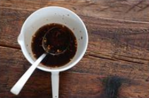

BoK Choi
Japnaese Vegetarian
Five week course in London
A five week introduction to traditionnal
Japanese Vegetarian meals,teaching you a section of rice and noodle dish.
Japnaese Vegetarian
Five week course in London
A five week introduction to traditionnal
Japanese Vegetarian meals,teaching you a section of rice and noodle dish.

Terlyaku Sauc